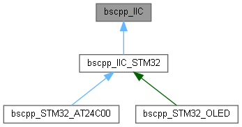
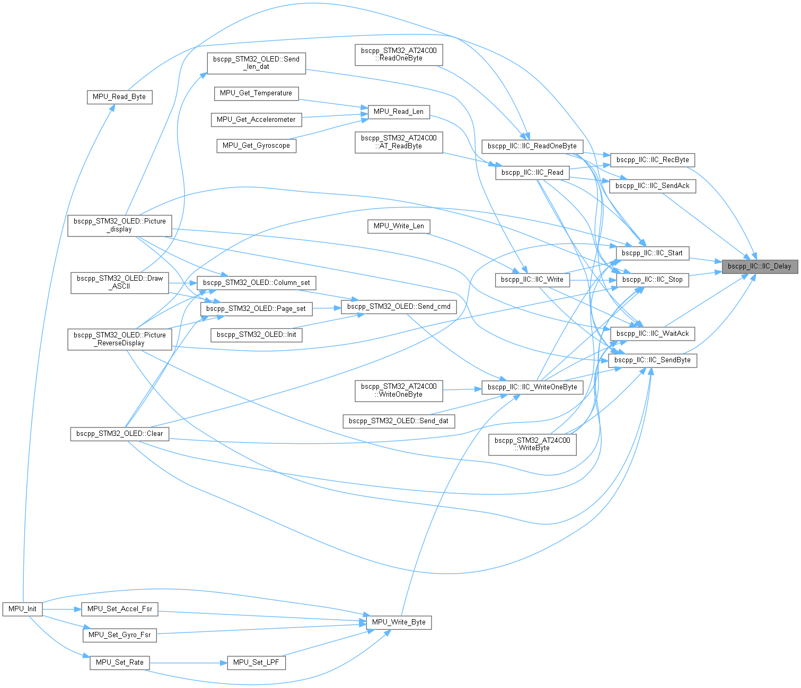
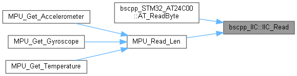
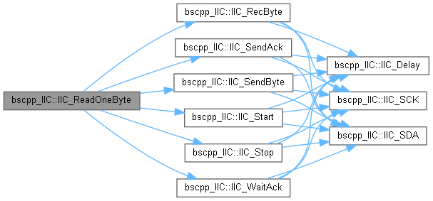
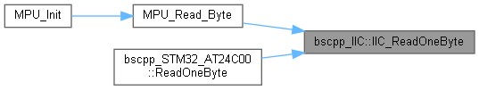
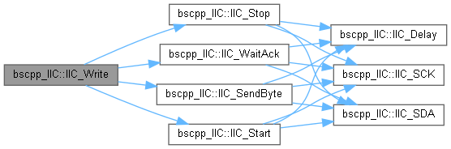
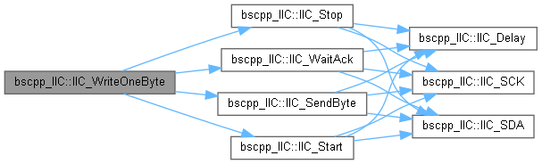
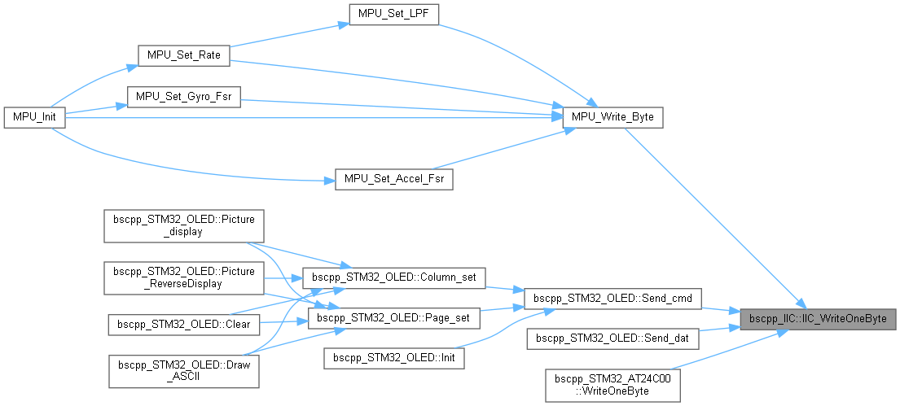

IIC的基础实现方法 留下三个保护性接口需要实现,分别是控制时钟,控制数据,延时函数 更多...
#include <bscpp_IIC.h>
类 bscpp_IIC 继承关系图:

Public 成员函数 | |
| void | IIC_WriteOneByte (u8 id, u8 addr, u8 dat) |
| 使用总线发送一个字节数据 更多... | |
| u8 | IIC_ReadOneByte (u8 id, u8 addr) |
| 使用总线接收一个字节数据 更多... | |
| void | IIC_Write (u8 id, u8 addr, u8 *dat, u32 len) |
| 使用总线发送定长数据 更多... | |
| void | IIC_Read (u8 id, u8 addr, u8 *dat, u32 len) |
| 使用总线接收定长数据 更多... | |
| void | IIC_Start (void) |
| 发送IIC开始信号 更多... | |
| void | IIC_Stop (void) |
| 发送IIC停止信号 更多... | |
| void | IIC_SendAck (u8 ackbit) |
| 发送IIC应答信号 更多... | |
| u8 | IIC_WaitAck (void) |
| 等待应答信号 更多... | |
| void | IIC_SendByte (u8 byt) |
| 发送IIC一个字节信号 更多... | |
| u8 | IIC_RecByte (void) |
| 接收IIC一个字节信号 更多... | |
Protected 成员函数 | |
| virtual u8 | IIC_SCK (u8 var)=0 |
| 控制SCK管脚口 更多... | |
| virtual u8 | IIC_SDA (u8 var)=0 |
| 控制SDA管脚口 更多... | |
| virtual void | IIC_Delay (void)=0 |
| 时序中的延时 在此处短暂延时 更多... | |
详细描述
IIC的基础实现方法 留下三个保护性接口需要实现,分别是控制时钟,控制数据,延时函数
在文件 bscpp_IIC.h 第 56 行定义.
成员函数说明
◆ IIC_Delay()
|
protectedpure virtual |
时序中的延时 在此处短暂延时
- 待办事项:
- 需要为其实现才可使用软件IIC
在 bscpp_STM32_AT24C00 , 以及 bscpp_IIC_STM32 内被实现.
这是这个函数的调用关系图:

◆ IIC_Read()
使用总线接收定长数据
- 参数
-
id 接收的器件地址,如0x68(MPU6050) addr 需要接收的寄存器地址起始 dat 改写的数据指针 len 数据数目
- 返回
- 无返回值
在文件 bscpp_IIC.cpp 第 198 行定义.
函数调用图:

这是这个函数的调用关系图:

◆ IIC_ReadOneByte()
使用总线接收一个字节数据
- 参数
-
id 接收的器件地址,如0x68(MPU6050) addr 需要获取数据的寄存器地址
- 返回
- 返回该寄存器内的数据
在文件 bscpp_IIC.cpp 第 153 行定义.
函数调用图:

这是这个函数的调用关系图:

◆ IIC_RecByte()
| u8 bscpp_IIC::IIC_RecByte | ( | void | ) |
◆ IIC_SCK()
控制SCK管脚口
- 参数
-
var 此处有三个状态,IIC_SET置位管脚,IIC_RESET复位管脚
- 返回
- 当var为IIC_READ时返回管脚状态
- 待办事项:
- 需要为其实现才可使用软件IIC
在 bscpp_IIC_STM32 内被实现.
这是这个函数的调用关系图:
◆ IIC_SDA()
控制SDA管脚口
- 参数
-
var 此处有三个状态,IIC_SET置位管脚,IIC_RESET复位管脚
- 返回
- 当var为IIC_READ时返回管脚状态
- 待办事项:
- 需要为其实现才可使用软件IIC
在 bscpp_IIC_STM32 内被实现.
这是这个函数的调用关系图:
◆ IIC_SendAck()
| void bscpp_IIC::IIC_SendAck | ( | u8 | ackbit | ) |
◆ IIC_SendByte()
| void bscpp_IIC::IIC_SendByte | ( | u8 | byt | ) |

◆ IIC_Start()
| void bscpp_IIC::IIC_Start | ( | void | ) |
◆ IIC_Stop()
| void bscpp_IIC::IIC_Stop | ( | void | ) |
◆ IIC_WaitAck()
| u8 bscpp_IIC::IIC_WaitAck | ( | void | ) |
◆ IIC_Write()
使用总线发送定长数据
- 参数
-
id 发送的器件地址,如0x68(MPU6050) addr 需要改写的寄存器地址起始 dat 改写的数据指针 len 数据数目
- 返回
- 无返回值
在文件 bscpp_IIC.cpp 第 177 行定义.
函数调用图:

这是这个函数的调用关系图:

◆ IIC_WriteOneByte()
使用总线发送一个字节数据
- 参数
-
id 发送的器件地址,如0x68(MPU6050) addr 需要改写的寄存器地址 dat 改写的数据
- 返回
- 无返回值
在文件 bscpp_IIC.cpp 第 136 行定义.
函数调用图:

这是这个函数的调用关系图:

该类的文档由以下文件生成:
- D:/gitt/MicrochipFor32/bscpp_Device/bscpp_IIC.h
- D:/gitt/MicrochipFor32/bscpp_Device/bscpp_IIC.cpp